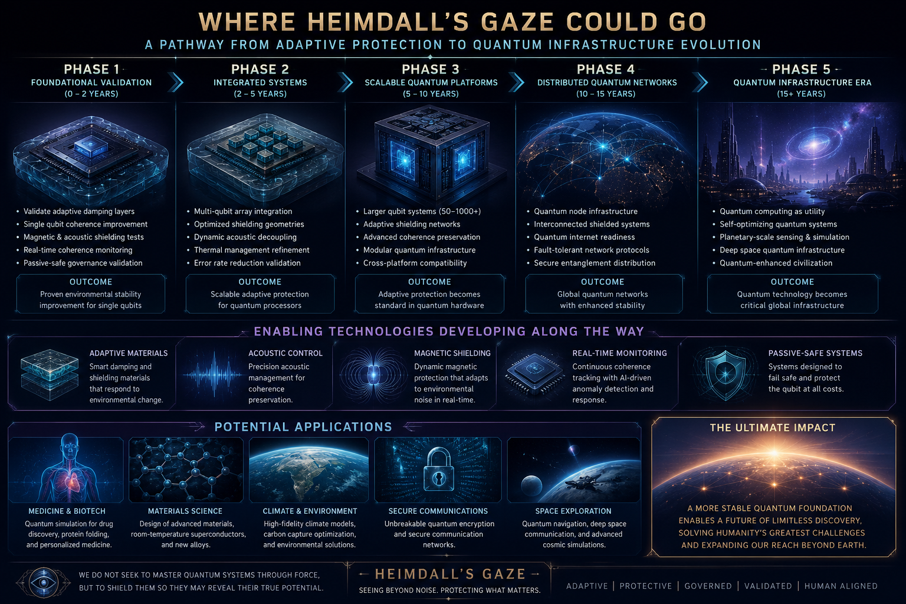

Recovered concept artwork
Quantum Floor
Purpose
Recovered artwork describes classical environmental stewardship, workload scheduling and a speculative research roadmap for quantum infrastructure.


Evidence and limits
No demonstrated improvement in coherence, fidelity, throughput, or facility reliability. Roadmap dates and numerical targets are aspirational, not predictions or results. Quantum hardware temperature requirements are platform-specific.
Next review gate
Compare scheduling and environmental models against ordinary baselines. Keep HIPPO-linked integrated architecture nonpublic.
Some original artwork remains outside public Git; only bounded summaries are supplied for those sources.
Recovered artwork supplied from Mr. Peloquin's collaborative design collection; individual illustration authorship is unverified.